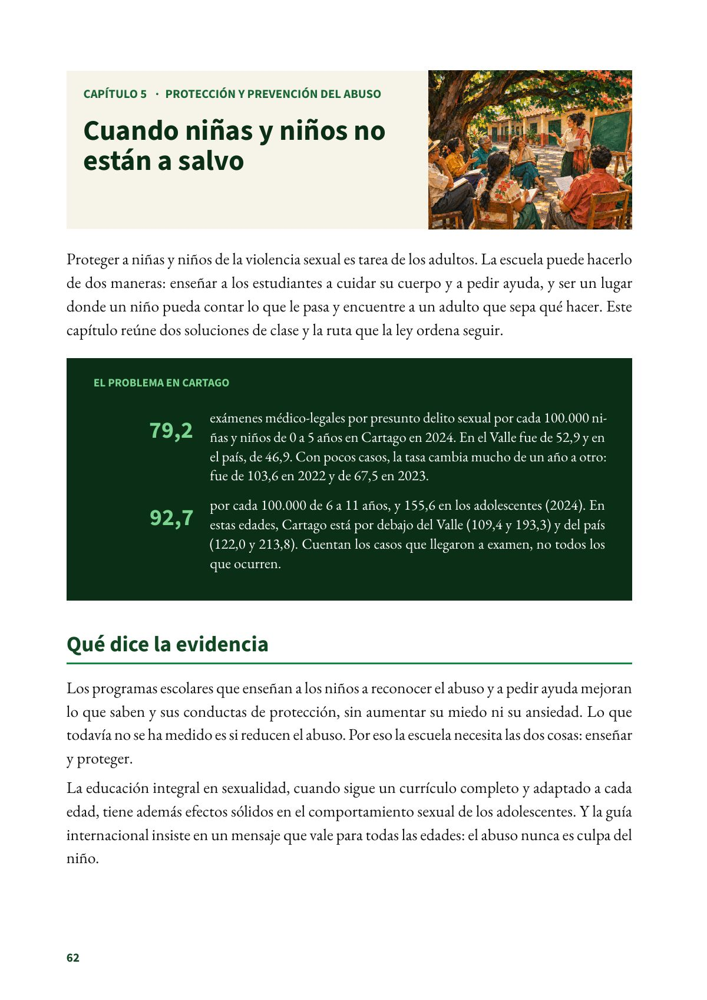
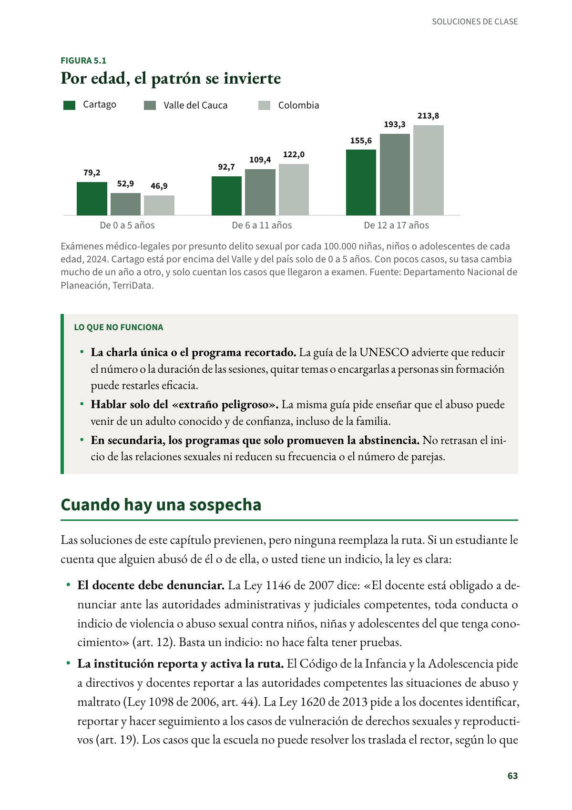
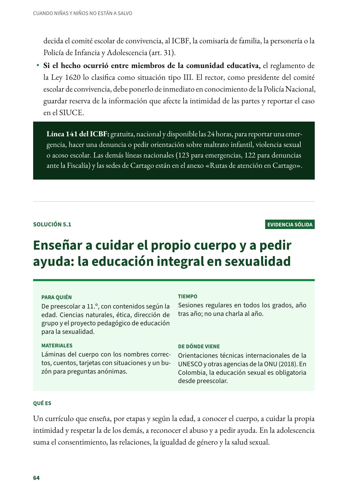

Cuando niñas y niños no están a salvo
Proteger a niñas y niños de la violencia sexual es tarea de los adultos.
PDF · 3 págs. · 1,2 MBProteger a niñas y niños de la violencia sexual es tarea de los adultos. La escuela puede hacerlo de dos maneras: enseñar a los estudiantes a cuidar su cuerpo y a pedir ayuda, y ser un lugar donde un niño pueda contar lo que le pasa y encuentre a un adulto que sepa qué hacer. Este capítulo reúne dos soluciones de clase y la ruta que la ley ordena seguir.
El problema en Cartago
- 79,2 exámenes médico-legales por presunto delito sexual por cada 100.000 niñas y niños de 0 a 5 años en Cartago en 2024. En el Valle fue de 52,9 y en el país, de 46,9. Con pocos casos, la tasa cambia mucho de un año a otro: fue de 103,6 en 2022 y de 67,5 en 2023.
- 92,7 por cada 100.000 de 6 a 11 años, y 155,6 en los adolescentes (2024). En estas edades, Cartago está por debajo del Valle (109,4 y 193,3) y del país (122,0 y 213,8). Cuentan los casos que llegaron a examen, no todos los que ocurren.
Qué dice la evidencia
Los programas escolares que enseñan a los niños a reconocer el abuso y a pedir ayuda mejoran lo que saben y sus conductas de protección, sin aumentar su miedo ni su ansiedad. Lo que todavía no se ha medido es si reducen el abuso. Por eso la escuela necesita las dos cosas: enseñar y proteger.
La educación integral en sexualidad, cuando sigue un currículo completo y adaptado a cada edad, tiene además efectos sólidos en el comportamiento sexual de los adolescentes. Y la guía internacional insiste en un mensaje que vale para todas las edades: el abuso nunca es culpa del niño.
Lo que no funciona
- La charla única o el programa recortado. La guía de la UNESCO advierte que reducir el número o la duración de las sesiones, quitar temas o encargarlas a personas sin formación puede restarles eficacia.
- Hablar solo del «extraño peligroso». La misma guía pide enseñar que el abuso puede venir de un adulto conocido y de confianza, incluso de la familia.
- En secundaria, los programas que solo promueven la abstinencia. No retrasan el inicio de las relaciones sexuales ni reducen su frecuencia o el número de parejas.
Cuando hay una sospecha
Las soluciones de este capítulo previenen, pero ninguna reemplaza la ruta. Si un estudiante le cuenta que alguien abusó de él o de ella, o usted tiene un indicio, la ley es clara:
- El docente debe denunciar. La Ley 1146 de 2007 dice: «El docente está obligado a denunciar ante las autoridades administrativas y judiciales competentes, toda conducta o indicio de violencia o abuso sexual contra niños, niñas y adolescentes del que tenga conocimiento» (art. 12). Basta un indicio: no hace falta tener pruebas.
- La institución reporta y activa la ruta. El Código de la Infancia y la Adolescencia pide a directivos y docentes reportar a las autoridades competentes las situaciones de abuso y maltrato (Ley 1098 de 2006, art. 44). La Ley 1620 de 2013 pide a los docentes identificar, reportar y hacer seguimiento a los casos de vulneración de derechos sexuales y reproductivos (art. 19). Los casos que la escuela no puede resolver los traslada el rector, según lo que decida el comité escolar de convivencia, al ICBF, la comisaría de familia, la personería o la Policía de Infancia y Adolescencia (art. 31).
- Si el hecho ocurrió entre miembros de la comunidad educativa, el reglamento de la Ley 1620 lo clasifica como situación tipo III. El rector, como presidente del comité escolar de convivencia, debe ponerlo de inmediato en conocimiento de la Policía Nacional, guardar reserva de la información que afecte la intimidad de las partes y reportar el caso en el SIUCE.
Línea 141 del ICBF: gratuita, nacional y disponible las 24 horas, para reportar una emergencia, hacer una denuncia o pedir orientación sobre maltrato infantil, violencia sexual o acoso escolar. Las demás líneas nacionales (123 para emergencias, 122 para denuncias ante la Fiscalía) y las sedes de Cartago están en el anexo «Rutas de atención en Cartago».
Fuentes del capítulo
Fuentes
Congreso de la República de Colombia. (2006). Ley 1098 de 2006, por la cual se expide el Código de la Infancia y la Adolescencia, art. 44. secretariasenado.gov.co
Congreso de la República de Colombia. (2007). Ley 1146 de 2007, art. 12. secretariasenado.gov.co
Congreso de la República de Colombia. (2013). Ley 1620 de 2013, arts. 19 y 31. secretariasenado.gov.co
Departamento Nacional de Planeación. (2026). TerriData: tasa de exámenes médico-legales por presunto delito sexual contra niños y niñas de 0 a 5 años, de 6 a 11 años y adolescentes (Cartago, Valle del Cauca y Colombia) [Series 6/2/12, 6/2/13 y 6/2/14]. terridata.dnp.gov.co
Instituto Colombiano de Bienestar Familiar. (s. f.). Línea 141. icbf.gov.co
Presidencia de la República de Colombia. (2015). Decreto 1075 de 2015, Decreto Único Reglamentario del Sector Educación, arts. 2.3.5.4.2.5, 2.3.5.4.2.6 y 2.3.5.4.2.10. funcionpublica.gov.co
UNESCO, ONUSIDA, UNFPA, UNICEF, ONU Mujeres y OMS. (2018). International technical guidance on sexuality education: An evidence-informed approach (ed. rev.). UNESCO. unesdoc.unesco.org
Walsh, K., Zwi, K., Woolfenden, S. y Shlonsky, A. (2015). School-based education programmes for the prevention of child sexual abuse. Cochrane Database of Systematic Reviews, (4), CD004380. doi.org
Así se ve en el libro
3 páginas

